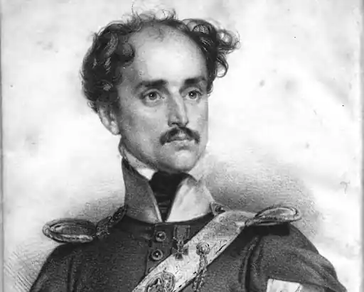

Народився Михайло Чайковський 29 вересня 1804 року в селі Галчинець (тепер Гальчин) Житомирського повіту Волинської губернії в давній українській (сполонізованій) родині. Батько — Станіслав Чайковський, шляхтич з Волині. Мати Михайла — Петронеля — була правнучкою гетьмана Івана Брюховецького, двоє дідів воювали під запорозькими знаменами (один загинув під час оборони Січі 1775 року).
Батько М.Чайковського помер рано. Опіку над хлопцем взяв його дід — Михайло Глембоцький. У 1812-му Гленбоцький воював на боці Наполеона, був легко поранений у Бородінській битві, а в бою на Березині урятував Бонапарта від полону, давши йому свого коня. Згодом у власному маєтку тримав озброєний загін — 200 осіб у козацьких одностроях — і друкував газету накладом 20 примірників.
Вчився у Бердичеві, в ліцеї Джона Воллсея. У 1825 році — їде до Варшави. Там знайомиться з Адамом Чарторийським, поетом з Кременця Юліушем Словацьким, Адамом Міцкевичем, Великим князем Костянтином Павловичем — намісником Польщі. У 1826 році Костянтин Павлович познайомив Михайла зі своїм братом Миколою І. Імператор запропонував Чайковському посаду при дворі та чин камер-юнкера, але той відмовився. У 1830 році почалося Листопадове повстання, Чайковський розпустив кріпаків, створив добровільні козацькі загони і влився в повстанське військо. Заслужив від польського уряду звання лейтенанта і Золотий Хрест за відвагу. Після придушення повстання емігрував до Франції. Його маєток конфіскували, а самого Чайковського на території Російської імперії оголосили персоною нон грата. Працював у французьких газетах. У 1837 році опублікував свій перший художній твір польською мовою "Козацькі повісті" ("Powiesci kozackie"). Протягом наступних семи років вийшло ще декілька томів його романів, повістей та оповідань. Найвагоміші — роман "Гетьман України" ("Hetman Ukrainy") про життя Івана Виговського та роман "Вернигора" про гайдамацьке повстання 1768 року. У Парижі підтримує тісні контакти з Чарторийським, Міцкевичем, Словацьким, Красинським, Норвідом, Лелевелем, Мохнацьким, Дембовським. За завданням Чарторийського Чайковський їде з таємною місією на Балкани. Всі дії були спрямовані на одне — послабити Росію. У вересні 1842-го Чайковський ініціював переворот у Сербії, внаслідок чого на Балканах послабився російський вплив. Дослідники стверджують, що в 1845-му Чайковський намагався підняти повстання в Україні. Є підстави вважати, що знаменитий програмовий твір кирило-мефодіївців "Закон Божий, або Книга Буття українського народу" — теж робота Чайковського. У своїх спогадах Костомаров писав: "Свого часу на Волині дістав я польською мовою написаний твір з вкрапленнями мало-російської, який приписувався якомусь з польських емігрантів з України, який я тоді переклав…". Співробітничав з Духінським. Міністр внутрішніх справ Росії граф Орлов у доповідній імператору писав, що волелюбні ідеї потрапили в Україну через емісарів, "керівник яких, Чайковський, перебуває в Константинополі". 18 грудня 1850 року Чайковський приймає іслам і стає Садик-Пашею. Він розпочинає переговори з османським урядом про формування козацьких загонів. Міністр закордонних справ після тривалих консультацій із султаном погоджується. 1851 року починають формувати перші "казак-алай". На початку 50-х загострилися російсько-турецькі відносини. У жовтні 1853-го Чайковський домігся розширення козацьких частин за рахунок поляків, болгар, румунів, угорців, османів і навіть євреїв. Сам розробив моделі одностроїв і наказав закупити для всіх козаків арабських рисаків. 20 жовтня 1853 року створено ініціативою Мехмеда Садик-паші (Михайла Чайковського) "Полк козаків оттоманських", згодом переформований в дивізію, а ще згодом — у корпус. 23 січня 1854 року османські козаки склали присягу. З Константинополя привезли знамено Запорозької Січі, а Садик-Паша отримав від султана титул "міріан-паша" (кошовий отаман). "Корпус козаків оттоманських" (називався також "дивізією козацькою", "дивізією польською", "корпусом козаків султанських") існував в різних варіантах від 1853 року до 1870-х років (згідно з польським істориком Єжи Латкою залишки полку козаків були розбиті російською артилерією при облозі Плевни 1877). Найактивніше в бойових діях підрозділ взяв участь у 1854 році при знятті облоги Сілістри та зайнятті Бухареста, згодом дислокувався в Добруджі. Після завершення Східної війни цей "іноземний легіон" сягав кількості 2000 шабель і багнетів. У лютому 1854 військо Садик-Паші ввійшло в Бухарест, а сам він став губернатором Румунії. На початок березня його війська зайняли позиції на річці Прут, готуючись до боїв із росіянами. Та уряд Австрії почав тиснути на султана, вимагаючи відвести загони. Султан погодився, висловив подяку Чайковському і навіть присвоїв йому титул "Око, вухо і правиця престолу". Наступного року Чайковський отримує найвище військове звання — беглербея. Про нього пишуть у Франції, Великій Британії і навіть Сполучених Штатах. Він отримує нагороди іноземних держав. 1856 року — закінчилась російсько-турецька війна. У 1861 році помер Абдул-Меджид. Новий султан Османської імперії, Абдул-Азиз, досить прихильно ставився до Садика-Паші, але той почав підготовку державного перевороту з метою посадити на трон принца Мурада. Але змова провалилась. Зв'язавшись із російським послом Ігнатьєвим у Константинополі, він просить у імператора амністії та дозволу повернутися до Росії. 28 серпня 1872 року Олександр ІІ офіційно оголосив прощення Чайковському. На початку 1873 року оселився в селі Бірки, Чернігівської губернії. Знову приймає православ'я. Упродовж 10 років живе в Києві, займається журналістикою, пише нові твори та спогади. В той час він отримував пристойну пожиттєву пенсію від Османської імперії (60 тисяч піастрів), яку згодом османи суттєво скоротили, а за іншими джерелами взагалі відмінили (Чайковський відмовився повернутись на військову службу до Османської імперії). Від останньої дружини-гречанки Ірини Теоскало у Чайковського народжується дочка, і сам імператор Олександр ІІ погоджується стати її хрещеним батьком. За гроші, подаровані імператором, він купує невеличку маєтність у с. Бірки в Остерському повіті Чернігівської губернії, де будує дім, який зберігся й понині. Згодом молода дружина зрадила його з управителем маєтку. Чайковський з розпачу перебирається на хутір поблизу, де мешкає в убогій хатині разом зі своїм вірним супутником Адамом Морозовичем. Якось, повертаючись з лісу з хурою дров, той помирає від серцевого нападу. Цей удар остаточно ламає Чайковського. В ніч з 17 на 18 січня 1886 р. він довго писав листи, а потім вистрілив у скроню з пістолета. Поховали його в с. Пархимів (нині Чернігівської обл.) поруч із Адамом Морозовичем. Писемна спадщина М.Чайковського сягає 12 томів.